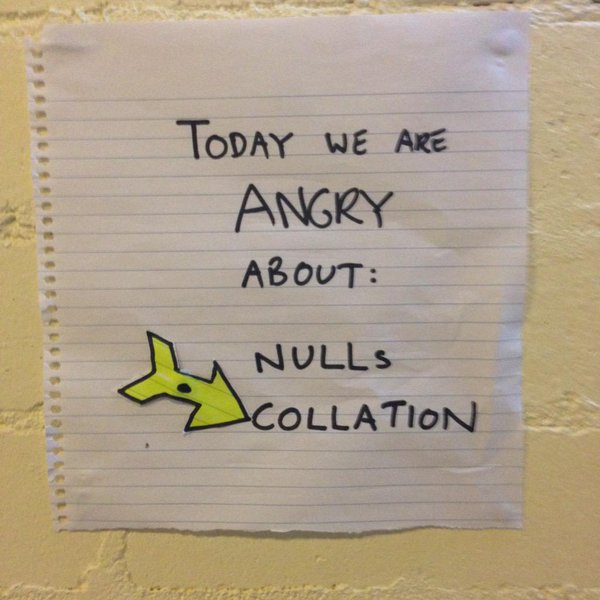

Collation: find it, compare it, change it
Find default collation of the database
Select DatabasePropertyEx('DATABASE_NAME','Collation')
Find collation of a column
SELECT name, collation_name
FROM sys.columns
WHERE OBJECT_ID IN (SELECT OBJECT_ID
FROM sys.objects
WHERE type = 'U'
AND SCHEMA_NAME(schema_id) = 'MySchema'
AND name = 'MyTable')
AND name = 'MyColumn'
Compare two values that have different collation
Select p.Name, w.Age
from
Person p
inner join Attributes w
on p.id = w.id collate database_default
Find all collations used in a database
SELECT distinct collation_name
FROM sys.columns
e.g.
| Collation_Name |
|---|
| NULL |
| Latin1_General_BIN |
| Latin1_General_CI_AS |
| Latin1_General_CI_AS_KS_WS |
| SQL_Latin1_General_CP1_CI_AS |
Change Collation of an entire database
First try and change the collation directly
USE [master]
GO
ALTER DATABASE [YOLO_DB] COLLATE Latin1_General_CI_AS
GO
/*
Msg 5030, Level 16, State 5, Line 5
The database could not be exclusively locked to perform the operation.
Msg 5072, Level 16, State 1, Line 5
ALTER DATABASE failed. The default collation of database 'YOLO_DB' cannot be set to Latin1_General_CI_AS.
*/
ALTER DATABASE [YOLO_DB] SET SINGLE_USER WITH ROLLBACK IMMEDIATE;
GO
ALTER DATABASE [YOLO_DB] COLLATE Latin1_General_CI_AS;
GO
ALTER DATABASE [YOLO_DB] SET MULTI_USER;
GO
Note that having a mismatch between TempDb and your database's default collation is the shortcut to madness.
Mood Tracker
Here is a mood tracker I have on my wall so I can move the little yellow pointer to indicate which of the only two possible moods I am currently in:
